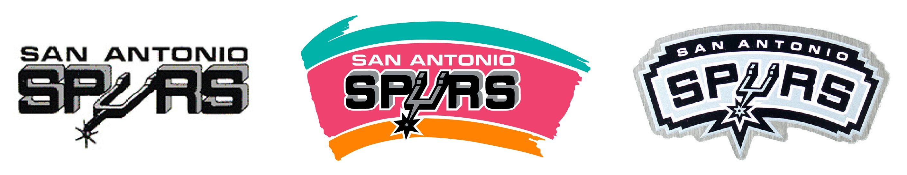
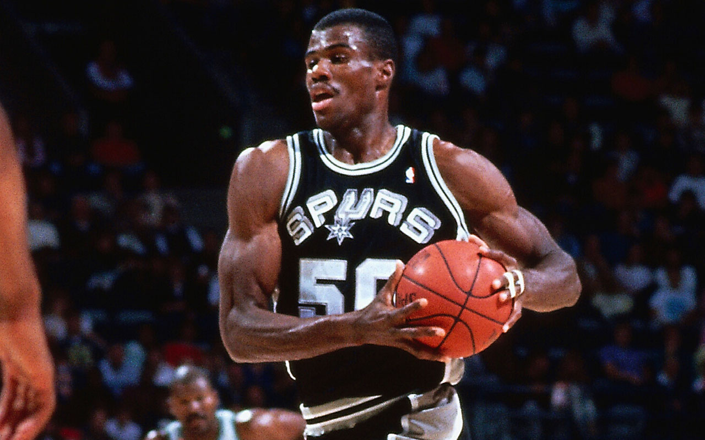
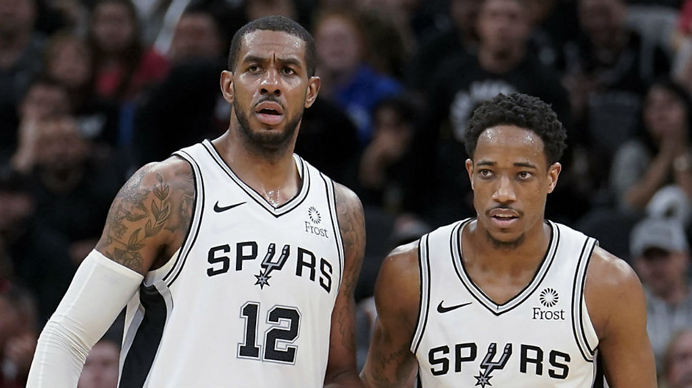

The San Antonio Spurs are a professional basketball team established in 1967. The Spurs have won 5 NBA championships spanning 1999-2014, which was arguably the most highly dominant era in the history of the NBA. As of 2019, the Spurs have the highest overall franchise winning percentage of any American Men's professional sports team. They began in the ABA as the Dallas Chaparrals, but were sold, relocated and renamed to the San Antonio Spurs in 1973. The name comes from a spur, which is a metal tool on cowboy boots used to direct the motion of a horse. Against all predictions, the Spurs immediately had success in the league and consistently made the playoffs. Currently, they have made the playoffs 21 consecutive years and have won 50+ games 18 consecutive years, both of which are all time NBA records.
George Gervin was the first superstar to play for the San Antonio Spurs. In the 1977-78 season, Gervin narrowly won the NBA scoring title over David Thompson and led he team to the Central Division title with 52 wins. With Gervin, the Spurs won 5 divisional titles in 7 years. In the playoffs, they made many strong run, including leading a best of 7 series 3-1 in the 1979 conference finals. However, despite many close tries, the Spurs were unable to make it to the NBA finals for over 20 years. In a time when the Western conference was dominated by Magic Johnson and Kareem Abdul-Jabbar, they could not quite break through. George Gervin was traded to the Chicago Bulls before the 1985-86 season, marking the end of this era.
David Robinson ended a 4 year streak of regular season losing records in 1989. Robinson was so dominant in college that the Spurs drafted him in 1987 knowing that he would be in the US Navy until 1989. The investment proved to pay off as Robinson stayed with the Spurs his entire career and won titles along the way including the Rookie of the Year, 10 time All Star, Defensive Player of the Year and even a league MVP. Towards the end of his career, joined by Tim Duncan, Robinson helped the Spurs win their first championship in 1999. Robinson earned the nickname 'The Admiral" for his service in the Navy and his charitable reputation. He was inducted into the Basketball Hall of Fame in 2009.
The San Antonio Big Three, Tim Duncan, Manu Ginobili and Tony Parker, constructed one of the most dominant 20 year stretches in the history of basketball. In 1997 Tim Duncan was selected with the first overall pick. This began the reign of Gregg Popovich, who is arguably the greatest NBA coach of all time. They also drafted Manu Ginobili with the 57th pick, although he did not join the team until a few years later. In 1999, Tim Duncan and an older David Robinson (the duo was known as the Twin Towers) won the Spurs first NBA championship. In 2001, Tony Parker was drafted 28th and the Spurs Big 3 began to develop. Ginobili, Parker and Duncan are the greatest trio in NBA history, breaking almost every imaginable team records and winning 4 more championships together. Every year, they were overlooked for their age but won a championship in 2014 as one of the oldest teams in the league. They had many signature wins including sweeping LeBron James and the Cavaliers in 2007. The 2014 championship was extremely special following a heartbreaking 7 game loss in the 2013 finals. Duncan retired in 2016 as the greatest San Antonio Spur in franchise history. Ginobili followed soon in 2018 as Tony Parker signed with the Charlotte Hornets, marking the end of the era.
Following the depature of the Big 3, the Spurs still managed to stay relevant. Up and coming star and 2014 Finals MVP, Kawhi Leonard, gave the Spurs a few good years. He was Defensive Player of the Year and was in MVP consideration for 2 seasons. However, he was unable to lead the team to another championship. Following a very odd injury stricken season, he wanted out of San Antonio and was traded to the Toronto Raptors for Demar DeRozan. The tandem of DeRozan and Aldridge had early struggles, but find themselves in the playoff hunt yet again for a team record 21st straight year. Alridge and DeRozan are perennial All Stars and the 2019 season leaves many fans hopeful to continue success as they have had in the past.
Augustyn, A. (2018, November 20). San Antonio Spurs. Retrieved February 02, 2019, from https://www.britannica.com/topic/San-Antonio-Spurs
David Robinson. (2016, February 04). Retrieved February 2, 2019, from https://www.biography.com/people/david-robinson-21101291
Manu Ginobili Biography - Affair, Married, Wife, Ethnicity, Nationality, Salary, Net Worth, Height. (n.d.). Retrieved February 2, 2019, from https://marriedbiography.com/manu-ginobili-biography/
San Antonio Spurs. (2019, February 01). Retrieved February 2, 2019, from https://en.wikipedia.org/wiki/San_Antonio_Spurs#1973–1976:_Coming_to_San_Antonio
R. (2017, April 8). Top 29 Major U.S. Sports Teams by Winning Percentage. Retrieved February 2, 2019, from https://www.statisticalfuture.org/top-29-major-u-s-sports-teams-by-winning-percentage/